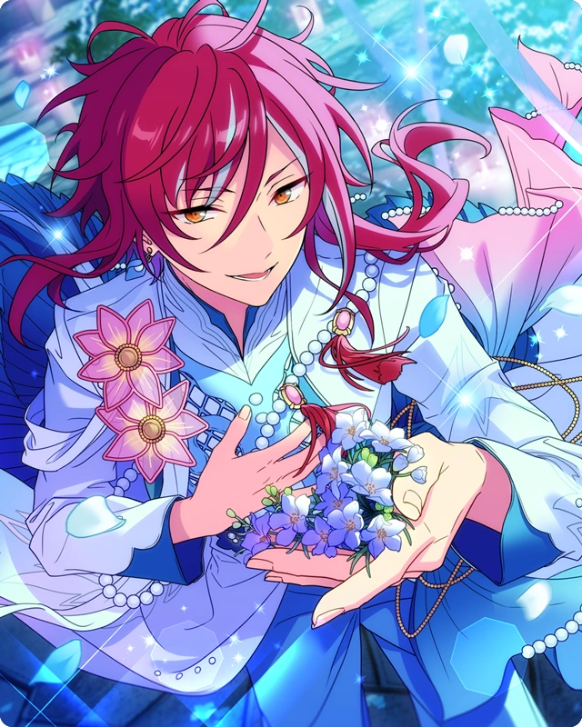

Summer Solstice Night Breeze

Unproofread Translations Terms of Service: This story is not JP proofread. Unproofread translations are under much stricter terms of service, including no screenshots publicly spread. Click for more information
While these translations are as accurate as I can personally make them, I am not comfortable with and do not permit use of the following:
Do not take or publicly circulate screenshots of this translation.
Do not use this translation in analysis threads, story threads, fanworks, quotebots, etc.
I would love to get this story properly proofread one day! If you are a translator interested in JP proofreading this story, feel free to email me or DM me at @citrinesea on Twitter.
The Absolute Worst Day Ever 1

… (Sigh)
…
... Tch.
…
Ahh, this is the woRST.
Sakasaki. You’ve been mutterin’ to yourself for a while now. I dunno if that’s just you talkin’ to yourself or what, but I was wonderin’ if I should ask or somethin’.
Oh? Sorry. Did I accidentally let my thoughts slip?
They’ve been slippin’ out the whole time. You’ve been polishin’ that crystal ball real hard like it killed yer parents while muttering about somethin’ nonstop, so of course I feel like I gotta ask.
You can do what you want until the work briefing starts, but… you just straight up scowlin’ like that gives the room a real awkward vibe.
So? What’s makin’ ya scowl like that?
… You’ll lend me an eAR?
It’d be weird to not ask after sayin’ all that to ya. So? What happened?
Nothing really. It wasn’t anything hUGE.
The truth is this morning, I invited Sora to play a new game with me, but he turned me down because he had plANS.
And— what pissed me off was that those plans ended up being that he was going on stream to play games with Senpai! He’s gotten real into streaming lately, and all.
What’s that supposed to mean? Uhhh? Which one was Aoba’s account…?
Huh, yeah look at that. He’s been streaming pretty often, alright.1
Apparently Sora is going to be on one of those marathon streams todAY.
So I asked him, “If you two are streaming together, why didn’t you invite me?”
And he replied with the sound argument of, “Don’t you have work today, Shisho~?”
I had nothing to say in response, so I just watched him leAVE…
I’m just saying that if they were going to stream together, they should’ve done it when I was free too.
And that scruffy-headed megane— wait, he isn’t scruffy anymore, but—! Letting Senpai get the better of me like that is the biggest humiliation of my lIFE!
It’s good to be enthusiastic about streaming, but he’ll probably go all in without minding his limits agAIN…
It seems like ever since he was dismissed from being Vice President, he’s gotten a lot of time on his hands, so he’s decided to pour all of his attention into something new… What is he, a tuna fish? Is he going to die if he stops movING?
Haha, that really gets you wound up, huh.
But it’s like what Harukawa said, right? It can’t be helped, we’ve got this magazine work briefing.
Sure, but…

Hello everyone. … Wait, huh? Everyone’s already here? We weren’t late were we?
Sena-senpai, Kitten. Good day to you too. You’re not late, you’re right on tIME.
What the— Then, stop sitting at the table like everyone was here, ‘kay? It makes me look like I’m late.
Don’t say something so unreasonable…
Now then, it looks like everyone is here, so shall we begin the work briefING?
This job is modeling for a wedding magazine. Today should be our interview, and as the special feature, I’ll be conducting my love fortUNES.
… Hm? What is it, Kitten-chan? “Everyone isn’t here yet,” you say?
Wasn’t this project supposed to have two representatives from Rhythm Link and NEW DI each?
Two each? But you guys and me makes three. So who’s the last person?

Morning everyone~♪ It’s MELLOW DEAR US’s Kuon Mashu~!
Huh? You guys were all here already. Could this old man3 have kept you guys waiting!?
Uwaaa~ I’m sorry? This old man’s usually good with time~
...
...
…
Huh? What’s with this weird atmosphere~ Uhhh— Oh?
If it isn’t Izumi-ku~n! This old man’s so happy we finally get to work together again ☆4
And it’s a modeling job on top of that. Let’s get along like last time, ‘kay ♪
Hold on a sec, who said you could get all buddy-buddy with me? So~oo anno~ying…
Or should I say, what’s with that character of yours? What’s that… “old man” thing you were just doing?
Huh? Ohh. When we worked together before, there was staff around, so I was just in work mode. This is what I’m like in my private life.
Doesn’t every person have a flip side to them? That’s how it is in our unit, anyways.
It’s just you three and Anzu-chan, right? I’m tired, so lemme be in “old man mode”, thanks.
I see. Do what you want I guess.
Huh? That was a surprisingly frank reaction, huh?
Not really. In this line of work, it’s normal for people to have other sides to them, right?
Ooh, it helps you’re quick to catch on~
That’s Izumi-kun, a real professional alright. Aw man, now this old man wants to get even closer with you.
What did I just say— don’t come on strong to get all buddy-buddy with me. Honestly, what’s with you…?
… Ahem. Now it looks like we’re all here, so let’s get back to the main topic of discussion, shall we?
Now, Kitten. For today’s interview, we were going to begin with my fortune-telling, riGHT?
The name of the project is, “Sakasaki Natsume’s Love Fortunes...”? Fortune-telling’s more of a girl’s preference, right?
You think so? This old man definitely can’t wait to have his fortune-told by Natsume-kun ♪ I wonder what fate has in store for this old man’s love life~

Heheh, it looks like girls aren’t the only ones who enjoy fortunes, hM?
Anyways. I am ready when you are. We can begin the fortunes whenever you wANT.
We’ve been selected for a long-running wedding magazine, so I intend to present my best fortunes, you know. Who shall go fiRST?
Me, me~eee! If no one else is gonna volunteer, this old man wants his fortune ♪
Got it. Well, would you please come sit directly in front of me and peer into the crystal ball. I’ll show you just how love will play out for yOU…♪
Well then, let’s begin.
…
… I see.
It looks like your current luck with love is all being converted into passion for your work, hm? Rather than love with one single specific person, the trendline of your luck will hit its highest when you’re showering your fans with your lOVE.
By the way, the lucky item that will improve your fortune is “orange juice”...♪
(Heh. And here he was scowling just a few seconds ago. When he works, he gets the job done right. That’s pretty remarkable.)
(Well, I’m sure if I say that to ‘im, he’s just gonna get mad.)
The Absolute Worst Day Ever 2

Now then, that concludes today’s work briefing hm? Good work everyone.
Yeah, good work. See you guys on the day of the photoshoot.
Please wait a moment, everyone. Before you go, there's something I want to sAY.
Hm? What’s the matter, Natsume-kun? You got so serious all of a sudden.
I won’t take up too much of your time. It’s about the love fortunes I gave just nOW.
The “love fortunes”? Ahh, for the magazine we just did.
The one I got was, “Now is the preparation phase for your romance...” right? And it’s important for me to start up a new hobby for my self-development.
That’s pretty rude, you know. I’ve never neglected working on my own self-development.
What’s the matter, Natsume-kun?
The truth is… I wanted to make sure the results of the magazine article could be published, so I just said harmless, nice-sounding things as idol love fortUNES.
The truth is when I looked in the crystal ball, I saw that the love fortune for everyone here was “the worst”.
Huh? Seriously?
Hmm…
Hmm...
"Hmm"? Can't you guys at least pretend to be a little more surprised?
It doesn’t really matter to me. Sorry to Sakasaki, but I never really believed in fortunes to begin with.
My kid sister loves that kinda stuff, so I let her do my horoscopes and blood-type fortunes all the time. Honestly, it's all just nonsense, right?
It might be an interesting conversation-starter, but… can’t say there’s a point in letting somethin’ so baseless and unreliable excite or worry me.
It’s surprising to me you’re such a realist, Kiryu-senpai. But why do you think people seek out fortune-telling even in this age of sciENCE?
That’s because fortunes aren’t just guesswork or temporary platitUDES. They've had real results. If you underestimate fortunes, it might come to bite you when you least expect it…♪
So does that mean something might actually happen in our love lives?
No, don’t get the wrong idea. There's just more to the love fortunes I gave you than meets the eyes.
The fortune doesn't just apply to romantic love, but love in all of your interpersonal relationships, be it affection or deep friendsHIP.
Huh? What’s that supposed to mean? How sca~ry.
(... Is what I want to say, but I really don’t know what to think, honestly. Aren’t the outcomes of fortunes just based on statistics and probability?)
(And he even looked into the crystal ball so deeply like that. I don’t know how often Natsume-kun’s fortunes strike right, but it felt kinda fake and over-the-top~)
(... Well, it's better to be careful just in case, right? Getting swallowed up into trouble is no laughing matter. I need to make sure I’ve got contingency plans in place.)
(Better safe than sorry, right?)
… Right. I looked into the crystal ball again, and sure enough, the fortune for your personal relationships is tremendously poOR.
Just from what I can see… Is it bad luck with a dear friendship…? Or troubles with love, perhaps…? I can’t quite see it well enough.
Usually I can see a whole lot more, but for some reason, it seems more misty today. Am I out of sORTS?
Anyway, you should be careful with all your interpersonal relationships in the near future.
— Well, you’re all pro-idols, so I doubt there’s anything like romance in your lives.
Mhmhmhm, of course ♪
Ahh~... Well, thanks for the warning, I’ll take it.
Judging by your reaction, it looks like you still don’t believe me, huh.
Well, yeah. I try to be careful with the relationships I got in my day-to-day life already.
Besides, even if I did have love troubles comin’ my way, I don’t got those kinda relationships in my life right now, so I’ll be fine.
I feel the same, more or less. As a professional idol, I haven't done anything that would cause trouble if it came to light. Don't group me with those sloppy kinds of people.
Hmph.
Well, then that’s fine. I was just letting you guys know the fortunes came out poorly, but it looks like you all aren’t very worried, sO…
Sorry for keeping you. If that’s all, I’ll see you on the day of the photoshOOT ♪
Yeah, see ya later.
Bye-by~e ♪
Hmm… They were all so confident, but are they really going to be okAY?
… Yep, no matter how many times I look in the crystal ball, it all comes out bad. It's all ominous imagERY.
My fortunes rarely miss the mark, but...
I just hope nothing happens to those thrEE.
The Absolute Worst Day Ever 3

(Phew, work’s finally over for the dAY…)
(The second I disembarked from the MEGASPHERE, all that was waiting for me was work, work, work with fortune-telling… I’m grateful for it, but it sure does wear me out a litTLE...)
(I can finally relax. I could go for a nap on the couch just like this.)
(Oh, yeah, those two. I should probably check my phone to see if they sent anything about wORK. … Oh?)
“Haha~♪ You’re so good at character-customization, Senpai~! This one totally looks like Mitsu-chan ♪”2
“Heheh, the way he moves and jumps around like a rabbit really is like him, huh?”
(Looks like they’re still streamING.)
“Ah, Nito-kun’s going into Mitsuru-kun’s house~”
(Heheh, it really does look like them. He did a really good job capturing their features— for him, anywAYS.)
…

(Sigh) … What the hell should I do…?
Oh, Kiryu-senpai. That’s quite a despondent look on your fACE.
Ahh, Sakasaki. … I’ve got a bit of a problem.
A problem? … Ah, could it be… Did something happen with the love fortune I warned you abOUT?
Nah, it wasn’t about love or anything… Hey, why do you look so happy about that?
Heheh, of course I’d be happy if a fortune of mine came trUE.
So? Can I ask what happened?
… Yeah, sure. So… after we had that preparatory meeting for that magazine, I ran into a little fan trouble…

(Alrighty, since the meeting I had got rescheduled, I got the rest of the day off. It’s been a while since I’ve had the chance to kick back and relax, huh?)
(That said, what do I even do with it. When my schedule just clears up outta nowhere, it kinda becomes a problem in itself.)
(Should I grab food for now? Or get some shoppin’ done…?)
Hm? I feel like I heard someone call out my name…?
Ohh, was that you? “Could you be Kuro-san?” Well, yeah, that’s me…
Whoa, you just started cryin’ outta nowhere!? Wh–What’s wrong?
Huh…? You’re just so happy you get to meet me? You only just became a fan recently, and you never thought you’d get to see me in person?
I mean, it’s an honor to hear that. Thanks.
“Please shake my hand, and could you take a picture with my son while you’re at it?” Ahh~... I dunno about that…
(I’ve never really been good at fanservice like this. I don’t really know how I’m supposed to act when things like this happen…)
(But. I guess I should do this kinda thing, at least a little…?)
(She’s so happy to meet me it made her burst into tears.... And she came all the way up here to the sky and everything…)
Huh? “Is a handshake not okay?”
W—Wait. It’s not that it isn’t okay or anything. So please don’t make that face, alright?
— Sorry for being weird and hesitant about it. Of course it’s okay. Wanna take the picture first?
Alrighty, chee-se… ♪
… Phew. (Somehow I managed to send ‘em on their way. Doin’ things I’m not used to is real tough, alright.)
Hm? Yeah, I’m really AKATSUKI’s Kiryu Kuro, but…
You want a handshake too? Yeah that’s fine. Thanks for always supportin’ me, yeah?
You want one too over there? Yeah, it’s not a problem or anything…

(Huh, what the—!? When’d this many people show up?)
(This is bad, I didn’t wanna cause a scene here.)
(And it looks like there’s a bunch of rubberneckers in here who don’t even know who I am. I gotta cut things off at some point…)
Huh!? Ahhh, sorry. I was just lost in thought for a second there.
You want an autograph? Wait, there’s no way I can sign that pricey lookin’ bag…
I mean, it’s not like I’m begrudging about it, but…
“I want to give it to my little brother who’s in the hospital,”? Well, if that’s the case…
Huh? You too? … Hahaha, I gotcha. Just wait there for a sec.
(Shit. No matter how many people I deal with, the more keep comin’...! What should I do about all this…!?)

(Sigh) I’m beat…
Well you certainly got mobbed, didn’t you, Kiryu?
It’s no laughin’ matter, Danna. I never coulda thought that many fans would gather, yanno.
It wasn’t just handshakes ‘n autographs, but they wanted pictures too… I mean, there were tons of rubberneckers lookin’ at me too.
They came closer with looks on their faces like, “If there’s a celebrity, let’s go get an autograph from him,” — those kindsa guys are the ones that are real tough to handle.
… Wait, huh? How’d you know about that, Danna?
Looks like you don’t know what’s going on with you right now, hm? Take a look at this.
What’s this… Social media? Why are you showin’ me something like…
… Huh? What the— are the fans super pissed about me!?
Indeed. I was surprised when I saw it myself.
“Kiryu-kun gave me the cold shoulder.” “I feel like he doesn’t give a shit about his fans.” “He really didn’t want to give his autograph out.”
What the hell is this!?
What do they call it… I think you’ve got a small-scale controversy on your hands.

I wasn’t tryin’ to be cold or anything, though… Why’d all that today have to blow up on social media like this?
Oh wow, it really is true. I just checked my socials, and it looks like even now the fans are still pretty wound uP.
Your diehard fans are there too, and it looks like it’s getting to the point where there’s a fan war between the ones defending you and the ones attacking yOU.
So even my own fans are gettin’ roped into this? Ahh, what the hell am I supposed to do…
I was just bein’ honest and respondin’ the way that I would usually… I wonder where I went wrong…
Hmm. You’re not exactly a people’s person, Kiryu-senpai… Or rather, the way you act and speak gives you an air of curtnESS.
And I can only say that because I don’t know you very wELL.
If people don’t know what you’re really like, I’d almost certain think you’d come across as a pretty scary person, wouldn’t yOU?
I know that too, but… I thought I handled it pretty well for it being me.
I don’t know how you dealt with it, but I feel like the impression the person who posted this got is the whole thING.
Or. They might just be someone who went up to you in curiosity because everyone else was.
If it was someone who doesn’t know what the distance between an idol and their fans is supposed to bE, I can see how they misinterpreted it as “you giving them the cold shoulder.”
You’ve gotta be kidding me…
Well, for better or for worse, information moves fast on social medIA.
Everyone will have forgotten about this little controversy of yours by tomorrow mornING.
Ahh, damn it, this is the worst!
The Absolute Worst Day Ever 4

Oh? Sena-senpai? You look pretty angry. What happenED?
Don’t you “What happened?” me! That smug, overly composed attitude of yours pisses me off…!
Sakasaki. What did you do?
I didn’t do anything to him. I haven’t seen him since our work briefING.
It’s all because of that fortune of yours that my love life is a complete disaster! What are you going to do to make up for this?
Sena, don’t tell me. Did you get caught up in some kinda scandal?
Hahhh? As if I would do something so unprofessional. What the hell are you talking about?
It’s not that. … Yuu-kun was completely cold to me!
…
… Doesn’t that always happEN?
No! He was acting way more cold than usual!
I happened to run into him in the hall, and said hello like I usually do, but…
And he said “I’m sorry, I can't today,” and even worse, he was completely unenthusiastic about it?
I mean, obviously I was gonna worry about him, right? There were dark circles under his eyes, so I was like, “Do you want me to help put you to bed?” all sweetly.
He just gave, like, this super dry laugh all, “hahaha,” and hustled off! What the hell’s with that!?
I dunno. That’s not somethin’ outta the realm of possibility, though?
No way! I know Yuu-kun best! Stop talking like you know everything, ‘kay thanks?
(Sigh) I wonder what I did to Yuu-kun…?
He probably hated the idea of you putting him to bed. He definitely just didn’t want you to harass him and be a nuisANCE.
No. Usually, even when he’s cold to me there’s at least a little love for me in there, y’know what I mean? … And he’d react at least a little bit more!
Sakasaki, this is all your fault, got it? How the hell are you going to take responsibility?
That’s not my fortune’s doing. They're not prophecies, they don’t actually make things come trUE.
… Still. I had a dispute with the fans, Sena’s got… well… his buddy troubles with Yuuki. Do ya think something happened to Kuon-senpai too?
Back when Sakasaki said we had to be careful with our personal relationships, he was the one guy to take note of it. Maybe he was actually nervous about somethin’ happening?
I don’t really buy into fortunes myself, but… With all this bad luck happenin’ to us one after the other, I’m kinda worried about him… or… you know what I mean…
Hmm. That might be trUE.
Is there anyone here who knows Kuon-san’s contact informatION?
Yeah, I do. He forced us to swap contact information back when we worked on the same photoshoot together.
Mhm, here it is. We haven’t talked since then, so it was buried all the way at the bottom of my texts.
I’m a little worried, so could you try getting in touch with him? If nothing happened, then that’s grEAT.
(Truthfully speaking, I’m not really interested in what’s happened to Kuon-san. I can sense there’s more to him than he lets on...)
(That attitude of his… I wonder if he’s trying to hide somethING.)
(Where there’s smoke, there’s fire as they sAY.)
(If I can have something on a member of the worldwide-famous MELLOW DEAR US, that might make for good dirt on Rhythm Link to negotiate wITH…♪)

Ah, a reply just came in. Let’s see, what’s it say…?
“Supes worst thing ever, heeeelp! I’m omw ASAP!” …?

Can I just say something!? This is the worst~!
He came into the room fast, just to start immediately complaining…
I was having lunch with Juis-kun, when… unluckily, Nozomi-kun saw us and got super-duper mad~
He’s usually like that, so at first I was like… “Well, whatever.”
But today was especially unlucky, because apparently, Chitose-kun spilled a drink all over Nozomi-kun so he was mega-pissed!
He just wouldn’t stop taking it out on all of us. Chitose-kun was floundering, Nozomi-kun was in a frenzy, it felt like the atmosphere went totally sour!
Naturally, Juis-kun bought this old man some time, and I was the only one who made it out of the room.
Nozomi-kun sure is hard to deal with, huh?
(What the— So it was just unit in-fightING?)
(That doesn’t feel like very useful information. I thought it’d be something more scandalOUS)
(Sigh) … It’s just like Natsume-kun said. This old man’s interpersonal luck is the worst of the worst~
Heheh. My fortunes really do turn out accurate, hM…♪
Is this the time to be so happy about it?
But it’s just like I said. It seems that misfortune really is happening to all of yOU.
Kiryu-senpai with his fans, and Sena-senpai with his approach towards Yuuki-kun, and Kuon-san’s relationship with his unit membERS…
For some reason, things that should usually be fine for you all aren’t going well at all. That is proof of your luck fallING…♪
The Absolute Worst Day Ever 5

Hey, Natsume-kun? This old man wants to live in his dorm in peace… Is this bad luck going to last forever?
According to my fortune-telling, your luck should improve by the end of the day or tomorrow. Temporary things like this don’t last very lONG.
When it comes to Sena-senpai and Kuon-san, from what I’ve heard, the source of it seems to be that your companions were in a bad mood.
Even with Kiryu-senpai’s little controversy, topics online tend to switch on a dime. If we just leave it alone, it’ll die out pretty quicKLY.
… Hearing you talk this whole time, you really do act like it’s someone else’s problem. I hope bad luck comes and smacks you in the mouth twice as hard.
Heheh, even when you say that, I haven’t experienced any bad luck todAY. If anything, I’ve had a front-row seat to all your misfortune, and I feel like that’s a little lucky actually.
Saying something so annoying...! Your personality is way too twisted!
Those are some real big words coming from you…?
Anyways. When it comes to an unlucky day like this, it’s just better to hunker down and keep from making any huge moVES. Acting half-hearted is only sure to bring more trouble.
I sure wish you’d said that earlier.
Well, you guys didn’t believe in my fortunes in the slightest, rIGHT? It wouldn’t have mattered what I said, it would’ve been in one ear and out the other for you guys.
That said, it’s still a little too early to go to bed, so things might still happen from here on out…
Acting on your own would only invite more trouBLE, so it might make more sense if the three of you stuck together and waited out the stORM.
Huhh? Why do I have to hang out with these guys? You’ve got to be joking.
Well… He’s definitely right that the three of us aren’t so close in our day-to-day lives.
I guess if there’s no relationship at stake, given we don’t know each other, our “love fortune” can’t make our interpersonal relationships fall any farther, huh? I guess that makes sense, more or less.
Oh, I know! This old man’s got a real great idea! Why don’t we have a little kickoff-party5 tonight to ward away all the bad luck?
Huh?
No way, definitely not. What’s with that suggestion? It’s like a club activity sleepover or something.
Can’t we just run out the clock doing whatever we want?
You guys are such downers! This old man is shocked to his core~
But. Like Natsume-kun said, if it’s safer to stay here for the time being, doing something together is way more fun than the four of us splitting off and doing our own things, right?
I want the magazine project to succeed too, so let’s hold a kickoff-party to boost up our teamwork levels!
Wait, no. It doesn’t make sense to throw something so overblown as a kickoff-party for one magazine shoot, much less a one-off model gig at that. Sounds like a waste of time to me.
I feel the same wAY. Besides, I’m not afflicted with bad luck, so I was just going to go back hOME.
That kinda thing isn’t my speed either…
Don’t say that, you guys~ This old man just wants to get to know you all more and become better buddies, you know!
Please, please, please! Can we? Let’s have fun as the Bad Luck Gang and Natsume-kun~!
…
… (Sigh) Yeah, yeah, okay. Guess if that’s what you want, I’ll do it.

Seriously!? Thank you Kuro-kun~! You turned out to be a real reliable guy after all~
Well, bulldin’ a rapport at work’s important too, I guess. I wanna know a lil’ more about you … and MELLOW DEAR US too, Kuon-senpai, so…
Of course! Ask me anything you want!
You ‘n Sakasaki should jump in too, Sena. If we’re stayin’ the night together, we might as well get to know each other.
… Fine, I get it. Guess I’ll take part in it.
But only just a little while, right? Once it’s bedtime, I’m going right to bed.
Wahoo! That’s the spirit!
Come on, you don’t have to be so guarded, Natsume-kun. We’re calling it a kickoff-party, but we can just make it a sweets-party and laze about. ♪
… Fine. I suppose I was the one who said the three of you should stick togeTHER…
Besides, I can’t say for certain that even bigger trouble won’t arise from here. I suppose if I stick around, it might make it easier to deal with it.
Hold on. Don’t say something so ominous.
(These guys are kinda more antisocial than I thought~? ES’s idols are surprisingly dry, huh?)
(This old man and MELLOW DEAR US are newcomers, so I wanted us to get acclimated into the new community as quickly as we could. Maybe I’m doing a bad job?)
(But I want to establish a position for MELLOW DEAR US where it’s easier for us to move how we want, so...)
(I hope I can use this opportunity to get closer to the three of these guys~)
…
Hm? What is it, Natsume-kun? Is there something on this old man’s face?
No, it’s nothING. I was just thinking, “Kuon-san’s assertive, hm?” I admire it.
Ahaha, this old man’s merit is his cheerfulness, after all ♪ Well then, shall we start setting up? I’ll go get the drinks~
The Absolute Worst Day Ever 6

Alrighty then, good work today everyone! Che~ers!
… (Raising their cups quietly.)
… (Raising their cups quietly.)
Huuuh? I feel like you guys aren’t saying anything!? Don’t leave me hanging here~
Shut up already. We’re going along with your stupid party, isn’t that enough?
Okay, sure, thanks for doing that, but~ Izumi-kun, I didn’t think you’d just be drinking plain old water.
I went to the trouble of putting together all these drinks. Look at this orange juice, isn’t it yummy?
Juice is essentially liquid sugar. Drinking that at night? Not gonna happen. Same with all the sweets we’ve got laid out here— I need to keep my figure. Don’t worry about it.
You sure are disciplined, Sena. That high professionalism of yours is the one thing I respect about you.
Sorry? The one thing you respect about me?6
Oh, I know! Hey, hey, I wanna put our kickoff-party up on social media, so let’s all take a picture~ Natsume-kun, get closer, cloooser!
So you’re not even going to give us a say in the matter, I sEE. You’ve already got your phone ready.
Ahaha. Alrighty, say che~ese ♪

Huh? Is there a sweets party going on here?

That looks delicious. Would you allow us to join you?
I don’t mind at all, bUT… You sure are an interesting group to come into the room togeTHER.
Ahaha, we could very well say that about you guys, couldn’t we? What kind of unit do we have gathered here?
If I had to name it… “The Love Fortune Took A Nosedive” Gang?
Hold on. Just the “Model Work” members is fine enough.
O…kay? I don’t really get it, but… We weren’t really hanging out or anything.
Me and Makoto happened to be getting back from streaming work…
We went to the convenience store. Madoka was being stubborn about something he had to eat.
Hmph, and naturally, Juis will go where I need to go, right?
Haha… Well, go on and take a seat, we got all kindsa snacks laid out y’know.
Thanks…
Yuu-kun!
Gweh. It’s stuffy when you cling on me so suddenly…!
I’m sorry for earlier, did I annoy you?
Huh? What are you talking about?
Earlier in the hallway, you acted really cold to me. I was worried I’d done something wrong…
Ahh, I just happened to be sleep-deprived from gaming too hard when I ran into you.
So that’s what it was… And here I was hitting the end of my rope. What a relief ♪
(Whispering) Is Nozomi-kun’s mood better, Juis-kun?
Yeah. More or less.
Newcomer. What are you leaving me out of, whispering to Juis like that?
Noth~ing~ We were just talking about how today was yet another day you’re in perfect form, Nozomi-kun.
Hmph, I wonder about that… Don’t get too swept away with the newcomer, hm, Juis?
Looks like everyone ended up where they need to be one way or another.
— Hm? Sakasaki isn’t here…

(Those two are still streamING…)
“Aaa! Senpai, we have to clear this event now~!”
“Wawah, sorry! That was my mistake… We’re going to have to redo this part, hm?”
(Honestly… Senpai’s such a…)
— Hey, what’re you doin’ out here?
— Y—... You surprised me. I wish you wouldn’t just call out to me out of nowhERE.
Nothing really. It's nothing huge. I was just checking my messages.
Oh, yeah, it looks like your controversy’s dying down, more or lESS.
It seems like your longtime fans managed to clear up the misunderstanding. What a relief, huh?
That so? That’s good… But from here on out, I gotta get better at interactin’ with people so I don’t inconvenience my fans again...
That’s right. And next time, you should try believing my fortunes from the very stART.
Nah, I dunno about that.
Kiryu-senpai, are you picking a fight with me, a fortune-tellER?

Haha, nah, that’s not it. It’s not like I’m sayin’ fortunes aren’t real.
It’s just, whether or not your luck is good or bad depends on your outlook, doesn’t it?
It’s all about yer mindset or yer physical state. Noticin’ a mistake or mishap you’d never think about otherwise and calling it bad luck? It’s ‘cuz you’re primin’ yourself to think like that.
Like what happened today, right? Unlucky things happened to Sena and Kuon-senpai, but normally, they wouldn’t have noticed that much.
And this small controversy of mine happens relatively often for an idol.
The fact it bothered me this time was… Well, I guess I was pretty worn out too.
— And…? The same goes for you, right?
Huh?
Yer makin’ the same face my kid sister does when she’s sulking.
It’s probably ‘cuz yer tired that you can’t accept yer feelin’ down about somethin’ so small— even though you hate the fact yer unitmates Aoba and Harukawa are havin’ a blast playin’ games.
I’m not lonely or anything. Rather, my luck isn’t particularly bad right nOW.
Haha, I wonder about that.
Welp, come back to the party when you got it sorted as much as you can. It looks like Yuuki’s bustin’ out the video games, so we’re all gonna play together.
If we don’t got you in there with us, the “Wedding Project Team”'s gonna lose. Welp, see ya in there.
Ah, hold on. What do you knOW?
… He lEFT.
(... It’s frustrating, but… it’s just like he said. I wouldn’t usually be this down about being turned down by Sora.)
(With the MEGASTREAM done with, my work on the ground and all my fortune-telling work… it might have been more of a burden on my body than I thOUGHT.)
(I’m a fortune teller. The fact an amateur could see right through me means I’ve got a long way to go tOO.)
(Heheh, with his aptitude for reading the subtleties in people, Kiryu-senpai might just be cut out for fortune-telling himself.)
(... It seemed like they were having fun on their stream, too. It’d be a waste if I spent a night like this sulkING instead of enjoying it.)
(Summer nights are short. I should get back to the shared room soon, and enjoy my time with these gUYS…♪)
Wahh! Senpai, we cleared it!
(Oh, I accidentally opened the stream video before shutting off my phone. … It seems like Sora’s having fun.)
“We did it! And with that, we can finally get married!”
Hm? Married…?
“Everyone, we finally reached the goal of this stream…! Thank you for staying and watching~!”
“Look look! Sora’s character and Senpai’s character are dancing on screen and holding hands~”
“Waa, thank you for all the warm comments ♪ There’s comments like “Congratulations on the Wedding,” too. I’m so happy!”
"HaHa~♪ Sora will be so happy with Senpai~!”
…
Yep.
— My love fortune was the worst of them aLL.
Translation Notes
- ↑ Tsumugi gets absorbed in streaming in his FS3 story And Now, a Wish for Change.
- ↑ This game seems to be something like the Sims or Tomodachi Life.
- ↑ Mashu refers to himself as おじさん (oji-san; older man/uncle). While he uses his own name Mashu as a third-person pronoun onstage, he uses Oji-san as a third-person pronoun offstage. I primarily translate him using "this old man" as his pronoun(?), but I also incorporate "I" and "me" at times for ease of reading. Just know that in this story, he either doesn't use a first-person pronoun or uses Oji-san.
- ↑ This happens in Mashu Idol Story 3.
- ↑ Kickoff parties (決起集会) are events used to rally people together and unite them towards a shared goal. It's also used to boost motivation. Usually, these parties are for new jobs, new projects, election campaigns being launched, or tournaments.
- ↑ Kuro says "そういうプロ意識の高いところは尊敬するぜ" and Izumi responds "『は』っていうのが引っかかるんだけど?" (What's that "wa" supposed to mean"?). The nunace of は here gives Kuro's sentence the tone that Izumi is not ordinarily respectable, but that one trait is respectable (otherwise he would say も, or "that's another respectable thing about you"). Hence Izumi's next response.